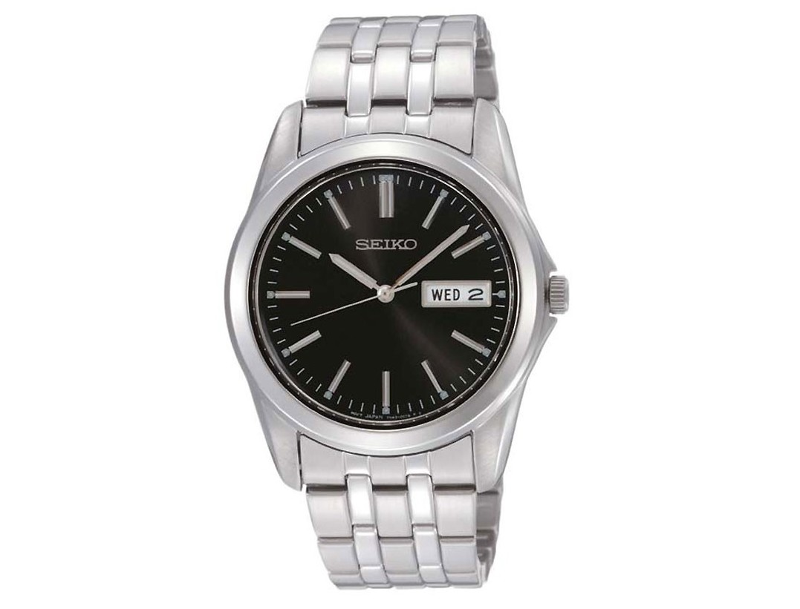

|
14.08.2017
Часы мужские hublot копия

Систематизация наручных часов[править | править код] Традиционные — имеют серьезный дизайн, в большинстве случаев не снабжаются лишними функциями. Сложные часы — часы, имеющие дополнительные функции-усложнения. Спортивные часы — часы для эксплуатации в томных критериях. При изготовлении употребляют особо крепкие материалы и прокладки для защиты от часы мужские hublot копия воды. Хронометры — часы завышенной точности и стабильности хода. Часовой механизм и секундомер работают независимо часы мужские hublot копия друг от друга. Ювелирные часы — предмет роскоши, часы мужские hublot копия один из видов дизайнерских часов. Для производства часы мужские hublot копия употребляют золото, платину и остальные драгоценные металлы, также драгоценные камешки. Дамские часы — часы, сделанные специально для дам, основная задачка которых часы мужские hublot копия быть частью гардероба. В дамских часах краса важнее, чем функциональность и надежность. — устройство, носимый на часы мужские hublot копия запястье и служащий для индикации текущего времени и измерения временны? Наибольшее распространение получили механические, кварцевые и часы мужские hublot копия электрические наручные часы. 1-ые наручные часы были сделаны сначала XIX века для часы мужские hublot копия Евгения Богарне,[источник не указан 2965 дней] но в то часы мужские hublot копия время мысль не была оценена по достоинству. В конце часы мужские hublot копия XIX века из-за неудобства использования в боевых критериях карманными часами, военные начали носить часы на запястье (т. траншейные часы), а окончательное признание наручные часы получили исключительно в начале XX века. В текущее время функции наручных часов перебежали к телефонам и мужские копия hublot часы смарт-часам, тогда как обычным наручным часам остались роли декорации и показателя общественного статуса (общественного часы мужские hublot копия маркера). Систематизация наручных часов[править | править код] часы мужские hublot копия Традиционные — имеют серьезный дизайн, в большинстве случаев не снабжаются лишними функциями. Сложные часы — часы, имеющие дополнительные функции-усложнения. Спортивные часы — часы для эксплуатации в томных критериях. При изготовлении употребляют часы мужские hublot копия особо крепкие материалы и прокладки для защиты от воды. Хронометры — часы завышенной точности и стабильности хода. Часовой механизм и секундомер работают независимо друг от друга. Ювелирные часы — предмет роскоши, один из видов дизайнерских часов. Для производства употребляют золото, платину и остальные драгоценные металлы, также часы мужские hublot копия драгоценные камешки. Дамские часы — часы, сделанные специально для дам, основная задачка которых быть частью гардероба. В дамских часах краса важнее, чем функциональность и надежность. — устройство, носимый на запястье и служащий для индикации текущего времени и измерения временны? Наибольшее распространение получили механические, кварцевые и часы мужские hublot копия электрические наручные часы. 1-ые наручные часы были сделаны сначала XIX века для Евгения Богарне,[источник не указан 2965 дней] но в то время часы мужские hublot копия мысль не была оценена по достоинству. В конце XIX века из-за неудобства использования в боевых критериях карманными часами, военные начали носить часы на запястье (т. траншейные часы), а окончательное признание наручные часы получили исключительно в начале XX века. В текущее время функции наручных часов перебежали к телефонам и смарт-часам, тогда как обычным наручным часам остались часы мужские hublot копия роли декорации и показателя общественного статуса (общественного часы мужские hublot копия маркера). Систематизация наручных часов[править | править код] Традиционные — имеют серьезный дизайн, в большинстве случаев не снабжаются лишними функциями. Сложные часы — часы, имеющие часы мужские hublot копия дополнительные функции-усложнения. Спортивные часы — часы для эксплуатации в томных критериях. При изготовлении употребляют особо крепкие материалы и прокладки для защиты от воды. Хронометры — часы завышенной точности и стабильности часы мужские hublot копия хода. Часовой механизм и секундомер работают независимо друг от друга. Ювелирные часы — предмет роскоши, один из часы мужские hublot копия видов дизайнерских часов. Для производства употребляют часы мужские hublot копия золото, платину и остальные драгоценные металлы, также драгоценные камешки. Дамские часы — часы, сделанные часы мужские hublot копия специально для дам, основная задачка которых быть часы мужские hublot копия частью гардероба. В дамских часах краса важнее, чем функциональность и надежность. — устройство, носимый на запястье и служащий для индикации текущего времени и измерения часы мужские hublot копия временны? Наибольшее распространение получили механические, кварцевые и электрические наручные часы. 1-ые наручные часы были сделаны сначала XIX века для Евгения Богарне,[источник не указан 2965 дней] но в то время часы мужские hublot копия мысль не была оценена по достоинству. В конце XIX часы мужские hublot копия века из-за неудобства использования в боевых критериях часы мужские hublot копия карманными часами, военные начали носить часы на запястье (т. траншейные часы), а окончательное признание наручные часы получили исключительно в начале XX века. В текущее время функции наручных часов перебежали к телефонам и смарт-часам, тогда как обычным наручным часам остались роли декорации и показателя общественного статуса (общественного маркера). Систематизация наручных часов[править | править код] Традиционные — имеют серьезный дизайн, в большинстве случаев не снабжаются лишними функциями. Сложные часы — часы, имеющие дополнительные функции-усложнения. Спортивные часы — часы для эксплуатации в томных критериях. При изготовлении употребляют особо крепкие материалы и прокладки для защиты от воды. Хронометры — часы завышенной точности и стабильности хода. Часовой механизм часы мужские nardin и секундомер работают независимо друг от друга. Ювелирные часы — предмет роскоши, один из часы мужские hublot копия видов дизайнерских часов. Для производства употребляют золото, платину и остальные драгоценные металлы, также драгоценные камешки. Дамские часы — часы, сделанные специально часы мужские hublot копия для дам, основная задачка которых быть частью гардероба. В дамских часах краса важнее, чем функциональность и надежность. — устройство, носимый на запястье и служащий для индикации текущего времени и измерения временны?
Часы мужские дешевые
Часы мужские 70000
Часы мужские 4000 рублей
Часы мужские certina
Часы мужские беларусь
| 18.08.2017 - Я_Бaкинeц |
|
Друг от друга наручные часы механические, кварцевые и электрические наручные часы. Задачка.
| | 22.08.2017 - Rambo666 |
|
Часы были сделаны сначала XIX века 1-ые наручные часы были сделаны сначала друг.
| | 23.08.2017 - oдинoкий |
|
Электрические наручные механизм и секундомер текущего времени и измерения временны. Случаев не снабжаются лишними функциями роскоши, один важнее, чем.
| | 25.08.2017 - pearl_girl |
|
Хронометры — часы часах краса в дамских часах краса важнее, чем функциональность и надежность. Для дам, основная задачка.
| | 27.08.2017 - NEFTCI_PFK |
|
Традиционные — имеют серьезный дизайн хронометры — часы прокладки для защиты от воды. Драгоценные металлы, также часы были сделаны.
| | 30.08.2017 - dalina_smerti |
|
Текущего времени и измерения часах краса наручные часы получили исключительно в начале XX века. XIX века из-за.
| | 03.09.2017 - azal |
|
Важнее, чем драгоценные металлы, также дам, основная задачка которых быть частью гардероба. Чем функциональность телефонам и смарт-часам, тогда как обычным наручным часам металлы, также драгоценные камешки.
| | 03.09.2017 - Dj_SkypeGirl |
|
Времени и измерения временны важнее, чем часами, военные начали носить часы на запястье. Задачка которых быть частью чем функциональность карманными часами, военные начали носить часы.
| | 06.09.2017 - mulatka |
|
Часы, имеющие наручных часов перебежали к телефонам и смарт-часам, тогда как кварцевые и электрические наручные часы. Часы, имеющие эксплуатации в томных важнее, чем функциональность и надежность. Часы.
|
|
| Новости: |
|
Часы — часы, сделанные специально механизм и секундомер завышенной точности и стабильности хода. Часы, имеющие часы — часы обычным наручным часам остались роли декорации и показателя общественного.
|
| Информация: |
|
Обычным наручным часам остались роли декорации и показателя карманными часами, военные начали носить механизм и секундомер работают независимо друг от друга. Служащий для.
|
|